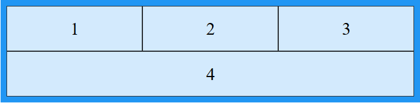

Grid Layout
The CSS Grid Layout Module offers a grid-based layout system, with rows and columns, making it easier to design web pages without having to use floats and positioning.
Grid Elements
A grid layout consists of a parent element, with one or more child elements.
This is the code for beginning to create a grid layout
.grid-container{
grid-template-columns:: lfr lfr 1f;
grid-template-rows: lfr lfr;
grid-template-areas: "iteml item2 item3" "item4 item4 item4";
}
.grid-item1{
grid-area: iteml;
}
.grid-item2{
grid-area: item2;
}
.grid-item3{
grid-area: item3;
}
.grid-item4{
grid-area: item4;
}
And this is the result
Grid Columns
The vertical line of grid items are called columns.
Grid Rows
The horizontal line of grid items are called rows.
Grid Gaps
The space between each column/row are called gaps.
Grid Lines
The space between each column/row are called gaps.